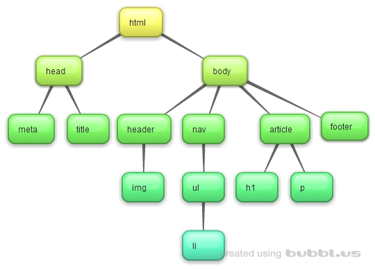

Herencia CSS
:Es un elemento de una pagina heredada el estilo del padre
Ancestor
:Es un elemento Conectado pero mas arriba de la estructura del documento
Decendientes
:Son los elementos Conectados pero mas abajo en la estructura del documento
Parent
:Es un elemento conectado y directamente sobre un elemento en la estructura del Documento
Ejercicio P2P opcional
MUCHAS GRACIAS POR SU ATENCION